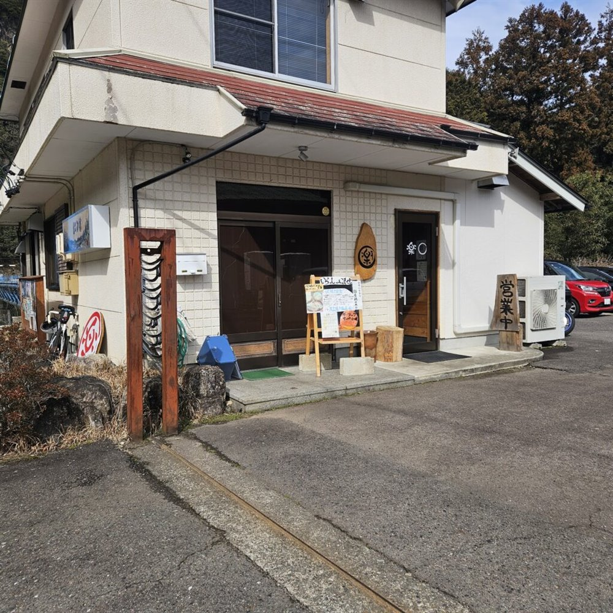
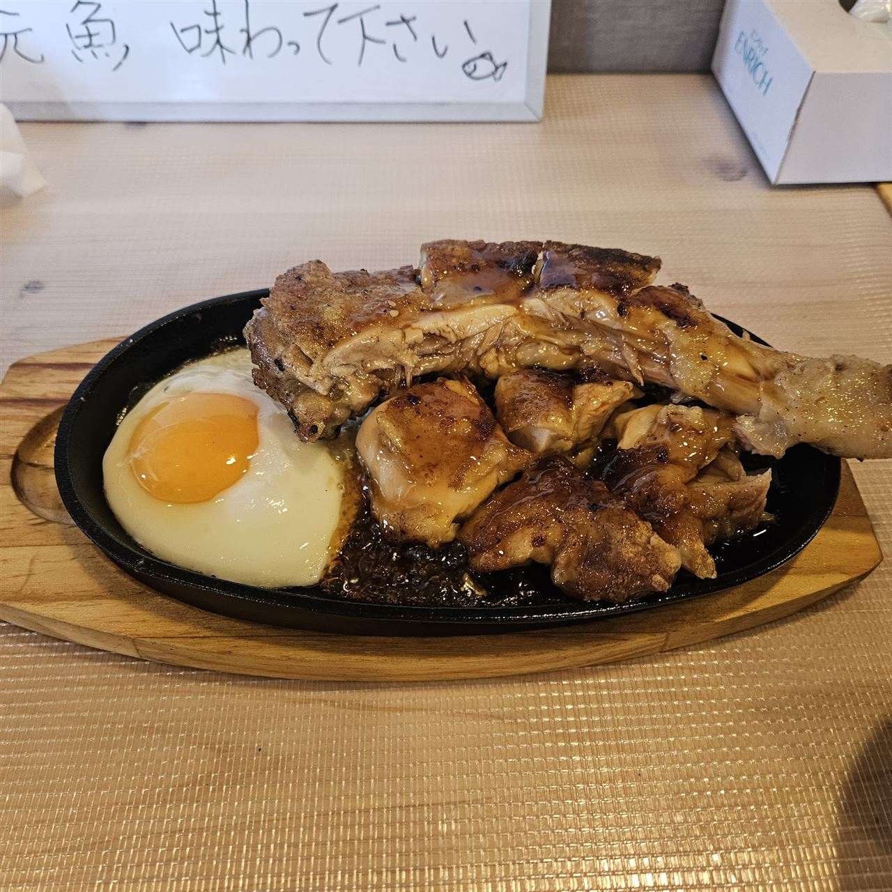
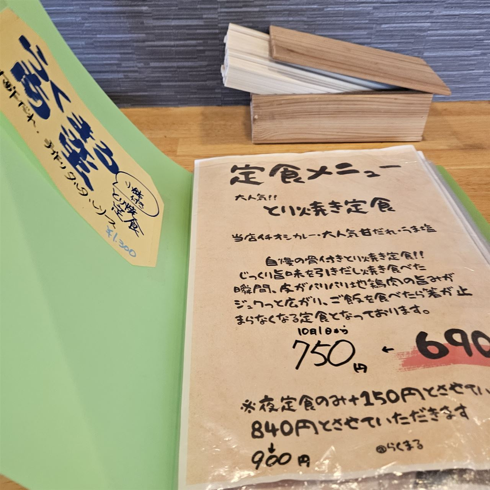
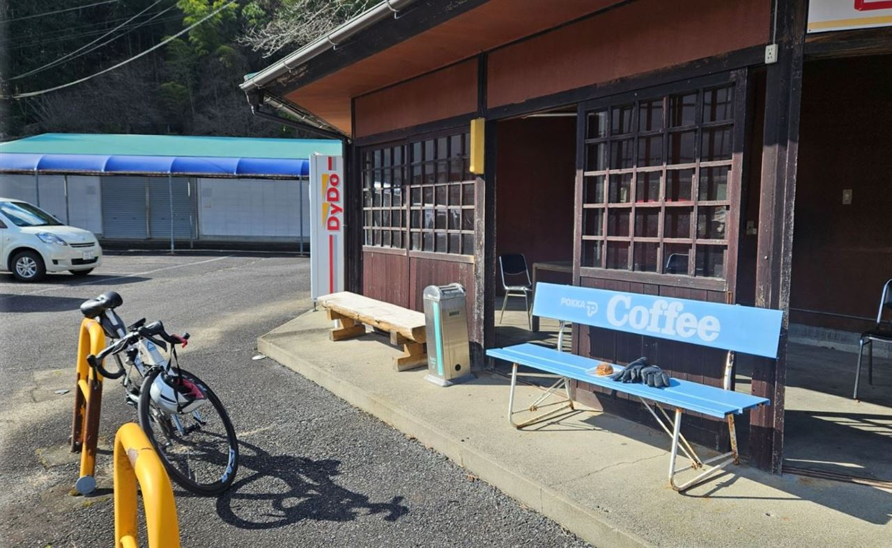
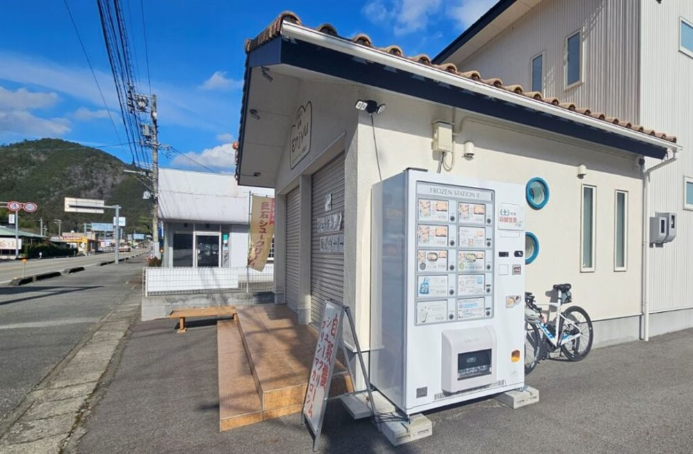
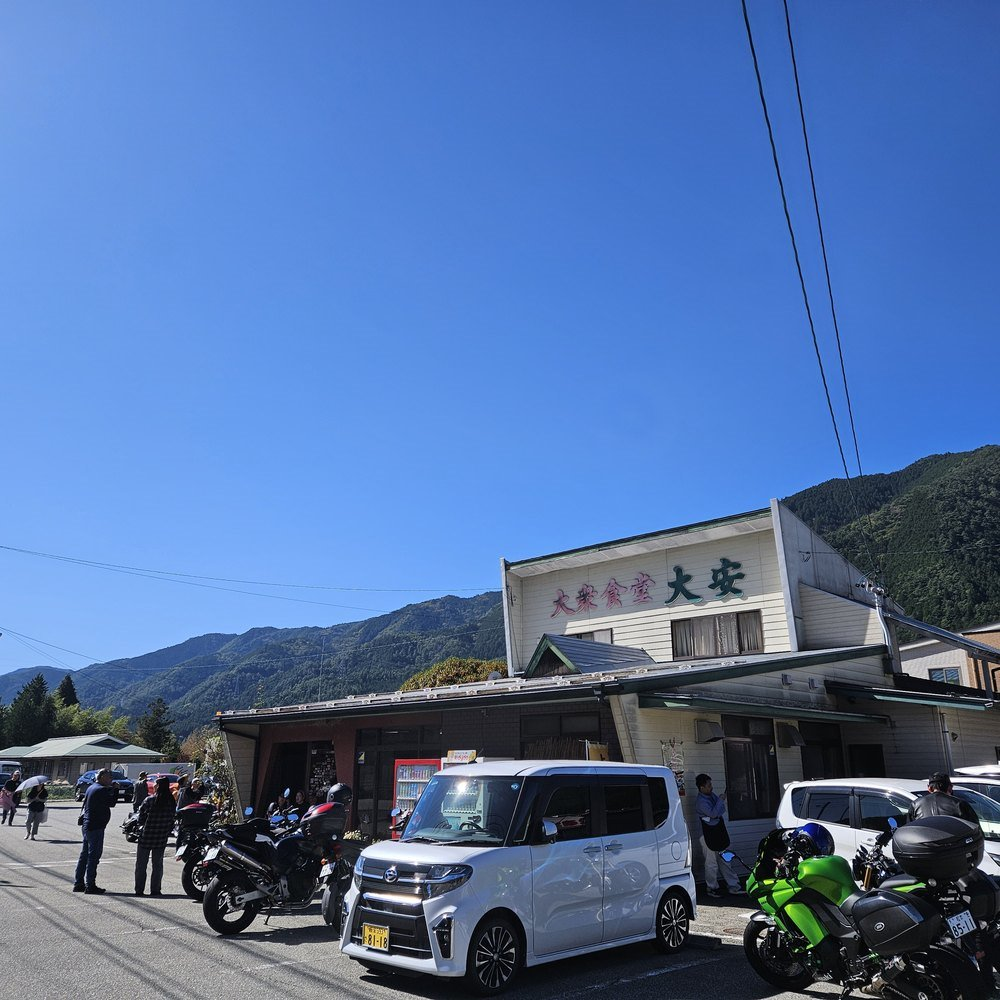
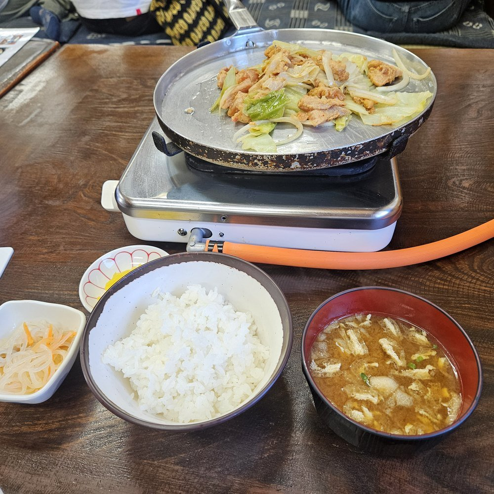
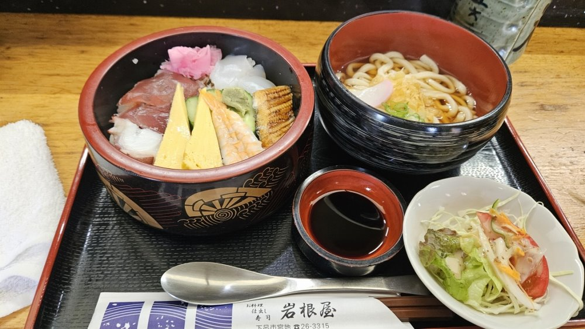
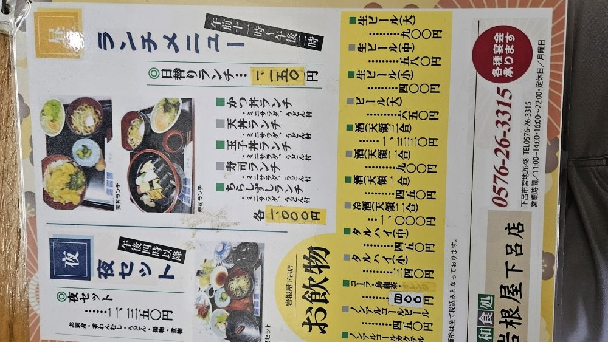

金山から下呂･萩原へ向かう､飛騨方面のお店です｡
金山の川沿いで､750円の鉄板とり焼き定食



金山町の川沿い､今井木材さんの敷地にあるお店です｡2025年1月のオープン直後はお客さんが自分ひとりだったのが､今では11時半にはめちゃくちゃ混んでいる大人気店になりました｡
とり焼き定食は750円で大盛無料｡おすすめは甘ダレで､鉄板がジュージューと音を立て､皮はパリパリでジューシーです｡第3日曜が定休日なので､お出かけの際はご注意ください｡
下呂の玄関口に残る､昭和のドライブインの名残


昭和の時代､下呂への玄関口だった大きなドライブインです｡今ではレストランを残すのみですが､可児や各務原で有名な｢美濃の郷｣というレストランとして続いています｡
お店の前には､日当たりのよいベンチと､250円でシュークリームを買える自販機があります｡冬でも日向ぼっこしながら､ひと休みできる絶好のスポットです｡
ケイちゃん定食を食べに､バイカーも自転車も行列


飛騨萩原にある､ケイちゃん（鶏ちゃん）の人気店です｡ケイちゃんは鶏肉を野菜と一緒に味付けして焼く､岐阜の飛騨･郡上地方の郷土料理です｡
10時すぎに着くと､お店の前にはバイクがずらりと並び､すでに長蛇の列｡整理券をもらって40分ほど待ちました｡小鉢がずらりと並んだショーケースも気になるお店です｡
下呂宮地で食べる､ちらし寿司のランチ


下呂の宮地にあるお店で､寿司とうどんのランチがお得です｡2025年8月の時点で､ランチは1,000円｡それでも十分すぎるほど安いと思います｡
うどんのコシは､そのあたりのうどん屋さんよりあるほどです｡丁寧に盛り付けられた寿司ネタがとても魅力的で､この日はちらし寿司ランチをいただきました｡
※紹介は､トマト工業ブログ(2016年〜2026年)の記事をもとにしています｡営業時間や定休日は変わることがあるので､お出かけの前にご確認ください｡